扫一扫，添加我为好友
走进镜头里的自己，每一张照片都是生活里真实的片段。不设脚本，不做摆拍，记录最自然的自己。
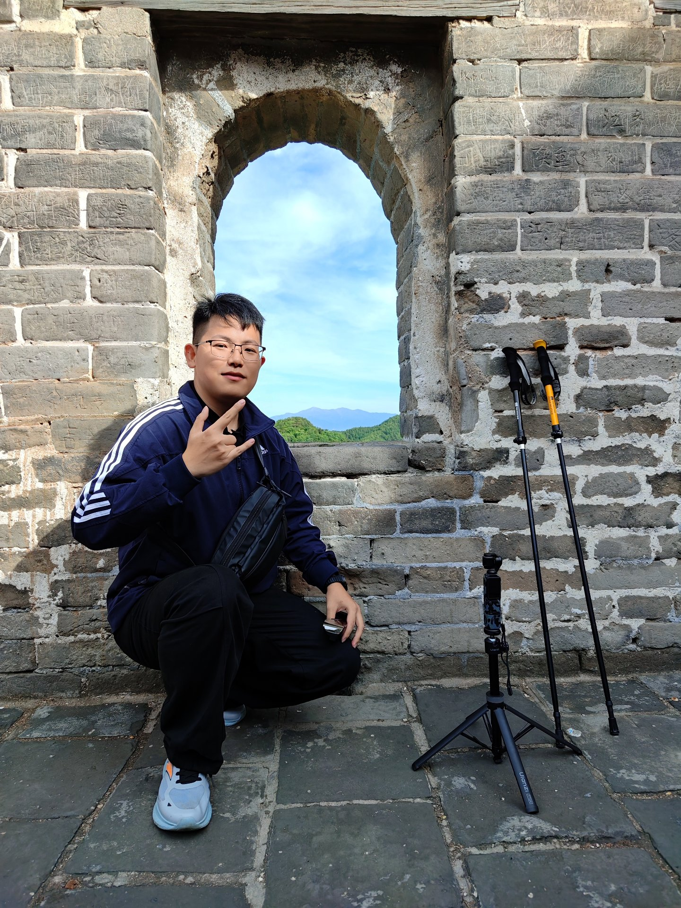
01 山野自拍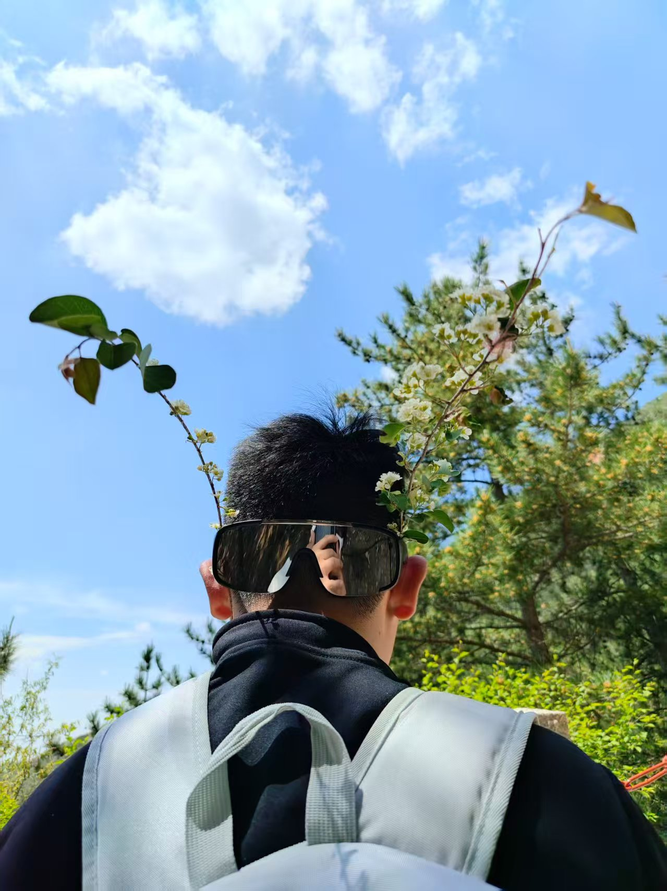
04 笑容特写一路同行的伙伴，镜头记录下的不仅是身影，更是并肩走过的时光。每一次出行，都是故事的续写。
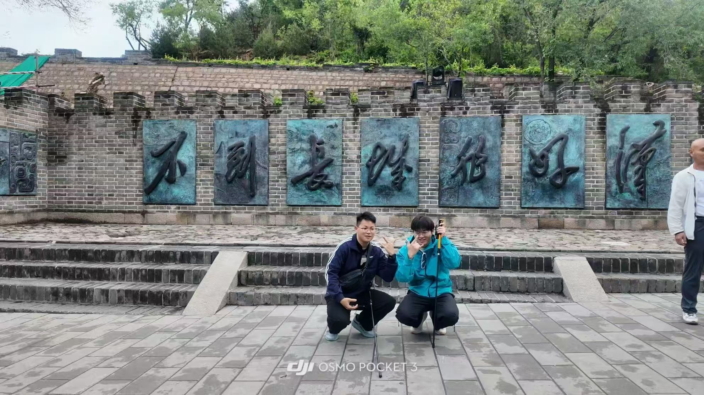
02 长城好汉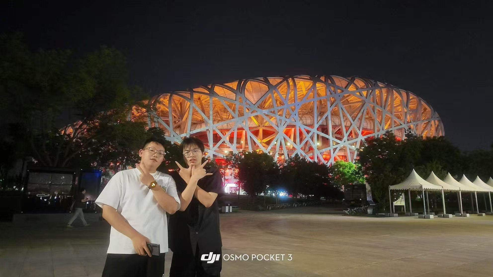
03 鸟巢之夜登高望远，山川河流在镜头里凝固成永恒。每一座山都有自己的故事，每一次按下快门都是与自然的对话。
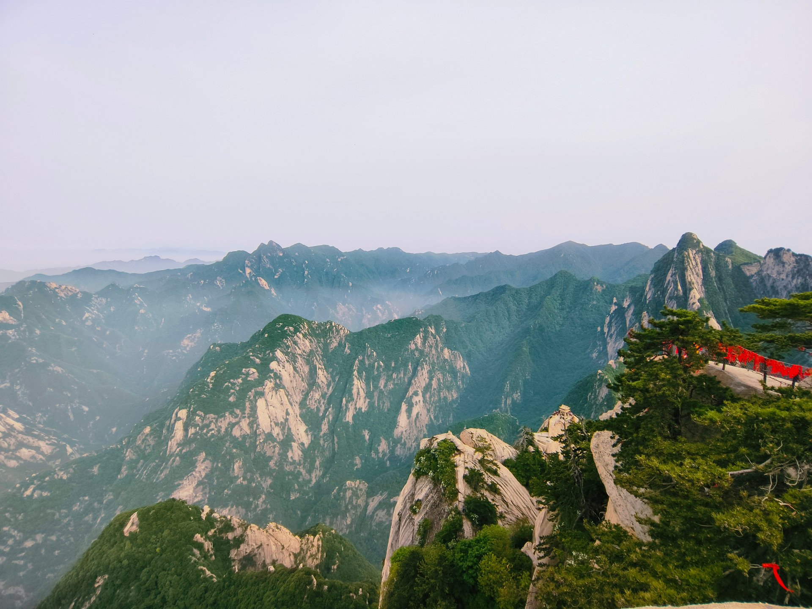
01 华山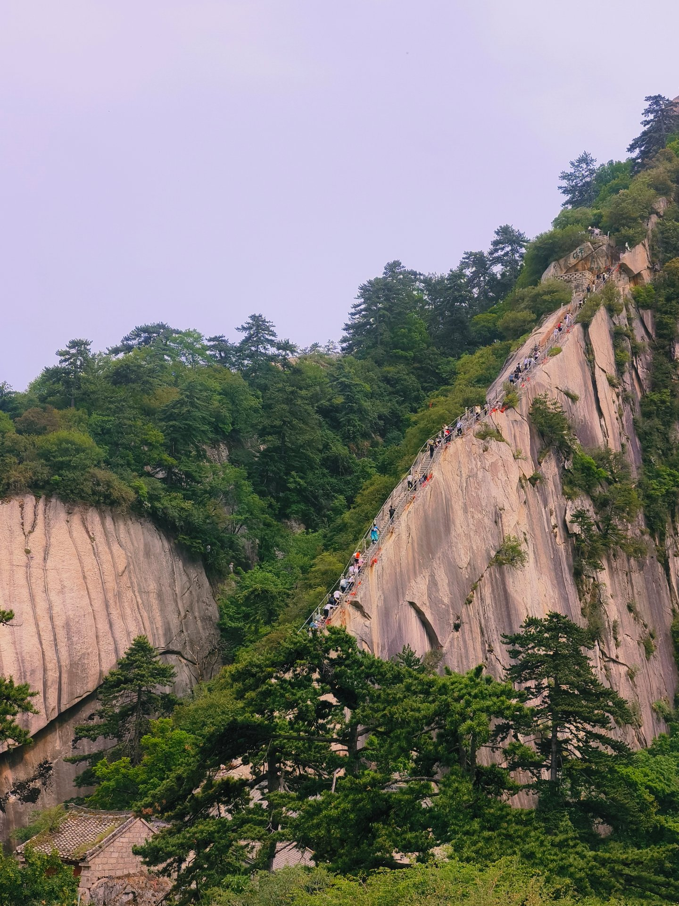
02 苍龙岭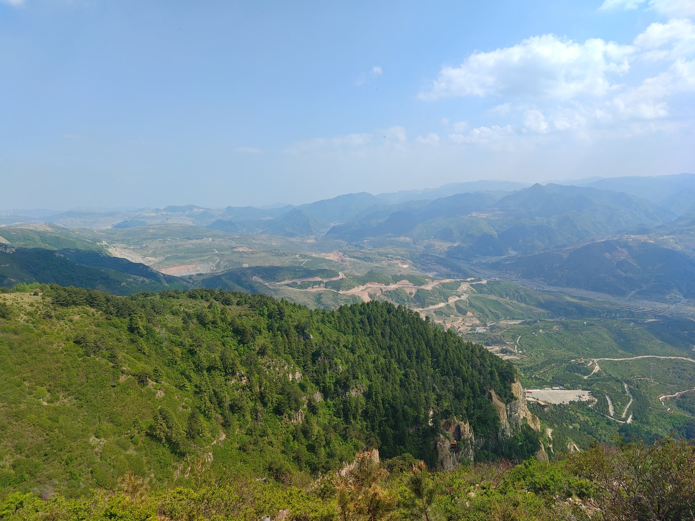
03 俯瞰群峰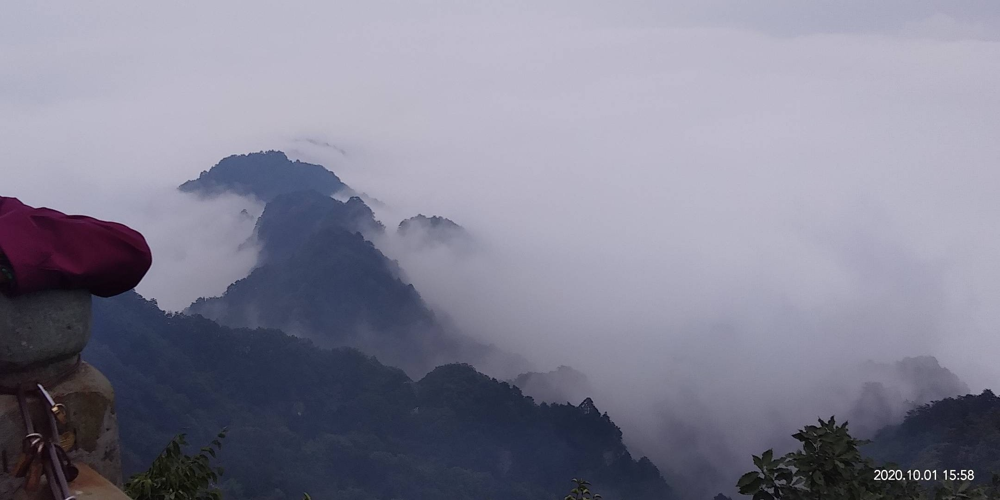
04 武当云海行走于城市之间，驻足于历史深处。从古老的宫殿到现代的灯火，每一步都是对世界的丈量，每一次按下快门都是与时空的对话。
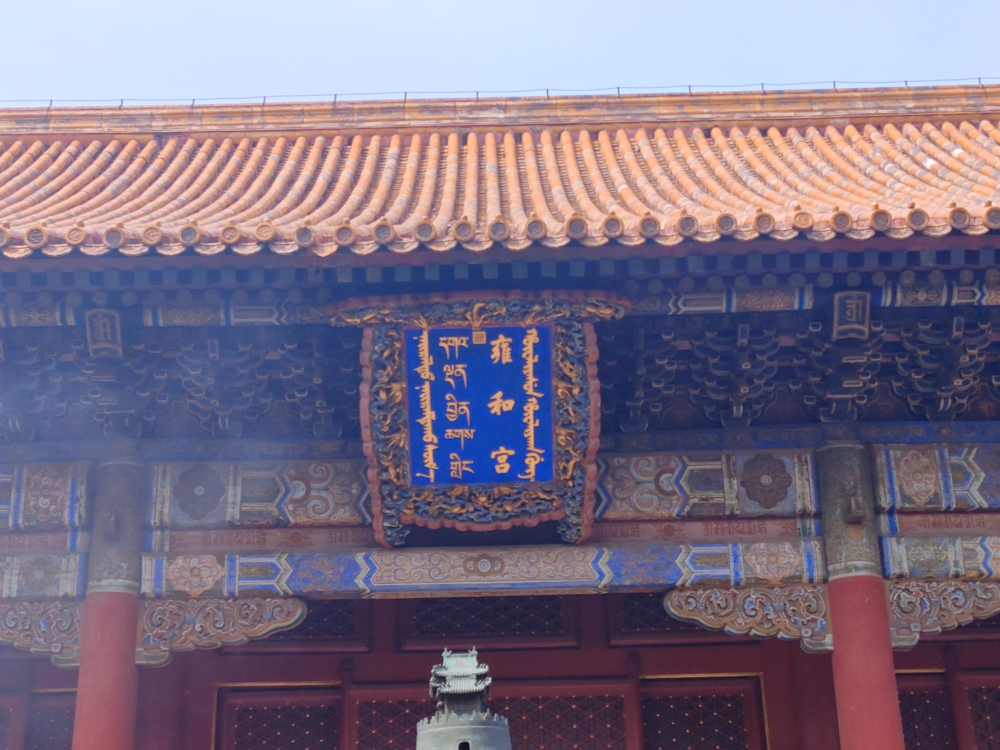
01 雍和古刹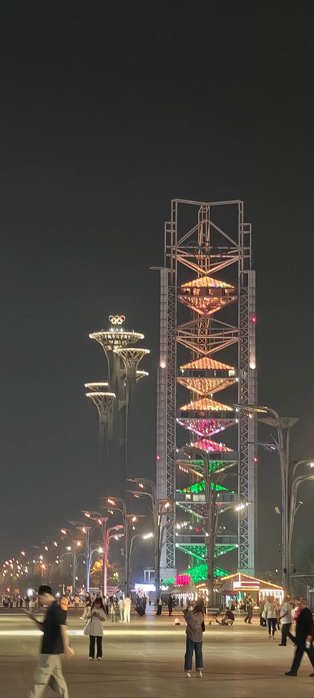
02 奥运夜色花开花落，草木荣枯。镜头捕捉的不只是色彩与形态，更是自然无声的呼吸。每一朵花都有自己的姿态，每一片叶子都有它的故事。
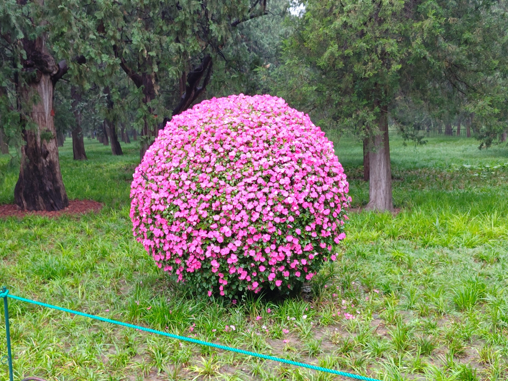
02 花球灌木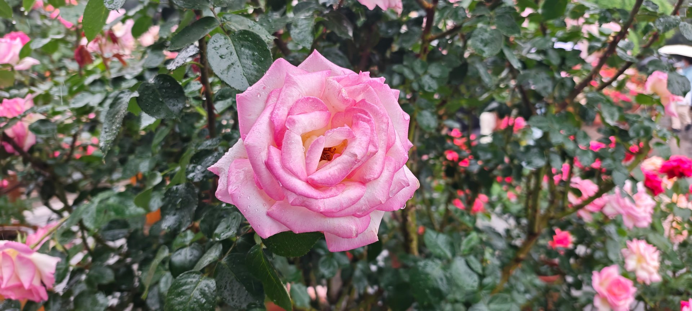
03 晨露玫瑰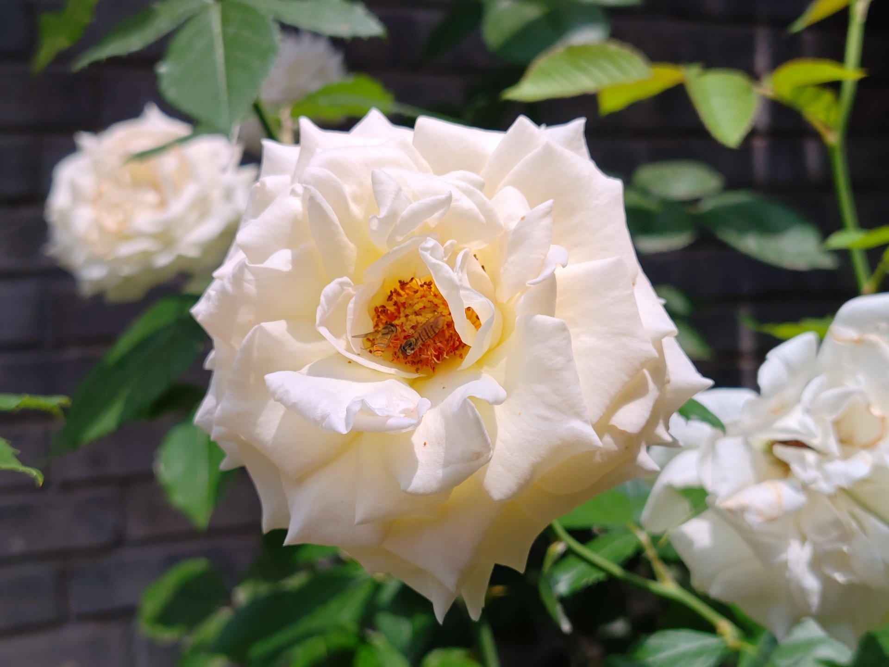
04 蜂舞花间
扫一扫，添加我为好友